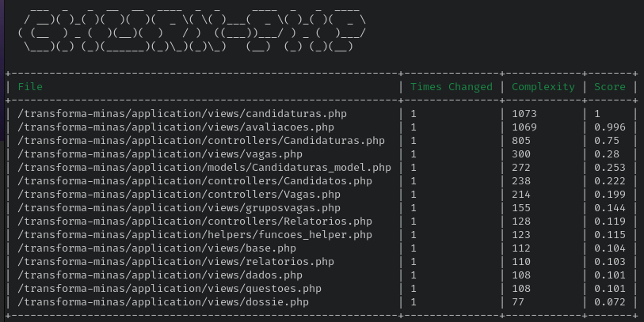

Analise da qualidade com a ferramenta Churn PHP¶
Utilizaremos a ferramenta churn-php para coletar metas de complexidade ciclomatica. Diferente da ferramenta PHP Insight que coleta métricas gerais, a churn-php indica os arquivos com maior complexidade que podem se beneficiar de práticas de refatoração. A ferramenta irá pontuar os arquivos de 0.1 a 1, sendo 0.1 complexidade mínima e 1 complexidade máxima.
Com a ferramenta instalada, executamos o seguinte comando:
vendor/bin/churn run --configuration=tools/churn.yml application/models/ application/controllers/ application/views/ application/helpers/
Segundo dados coletados pela ferramenta, os top 15 arquivos mais complexos do transforma são apresentados na imagem abaixo:

Iremos avaliar alguns dos arquivos apontados pela ferramenta, discutindo possíveis motivos para terem uma taxa alta de complexidade ciclomatica.
views/candidaturas.php¶
O arquivo views/candidaturas.php possui 3882 linhas de código fonte. Realizando uma contagem básica
do número de estruturas condicionais (if, else) no arquivo, temos 473 if e 58 else. Um arquivo com
473 caminhos possíveis tem um custo enorme de manutenção e evolução, o que indica a alta taxa
de complexidade atribuida pela ferramenta. O Code Igniter segue o padrão MVC, e nesse padrão
a camada de visualização não pode implementar regras de negócio.
Alguns desses 473 caminhos possíveis são verificações que deveriam estar ou nas modelos ou nas
helpers. A seguir, um trecho de código que não deveria estar na view, e sim em uma helper para
candidaturas, por exemplo.
if($menu2 == 'Curriculo'){
/*$attributes = array('class' => 'kt-form kt-form--label-right',
'id' => 'form_candidatura');*/
/*if($num_formacao == 0 || $num_experiencia == 0){
"
type=\"text/javascript\">
alert('Preencha a formação e experiência em dados pessoais para continuar.');
window.location='/';
</script>
";
}*/
if(strlen(set_value('num_formacao')) > 0){
$num_formacao = set_value('num_formacao');
}
if(!($num_formacao>0)){
$num_formacao = 1;
}
if(strlen(set_value('num_experiencia')) > 0){
$num_experiencia = set_value('num_experiencia');
}
if(!($num_experiencia>0)){
$num_experiencia = 1;
}
form_open_multipart($url, $attributes, array('vaga' => $vaga, 'num_formacao' => $num_formacao, 'num_experiencia' => $num_experiencia));
}
O fato desses caminhos e verificações estarem implementados diretamente na view, impede o reuso e a implementação de testes para essas regras. Muitas dessas condicionais também são utilizadas para controlar o estado da pagina. Além disso, o arquivo contem 21 linhas de código comentadas.
Por serem arquivos que geram as paginas html, views devem ser o mais desacopladas do backend
possível. Seguindo a própria documentação do Code Igniter,
o construtor echo nas views deve ser utilizado apenas para apresentar variáveis que venham das controllers (carregamento dinamico),
mas na plataforma o uso de echo vai para além disso, sendo utilizado para gerar html a partir de strings.
Isso polui demais a estrutura do código e dificulta a manutenção e evolução da página. No arquivo
views/candidaturas.php o comando echo é utilizado 658 vezes.
echo "
<section class=\"login-block\">
<!-- Container-fluid starts -->
<div class=\"container\">
<div class=\"row\">
<div class=\"col-sm-12 d-flex justify-content-center\">
<!-- Authentication card start -->";
$attributes = array('class' => 'md-float-material form-material');
echo form_open($url, $attributes);
echo "
<div class=\"text-center\">
<img src=\"".base_url('images/logo.png')."\" alt=\"".$this -> config -> item('nome')."\" />
</div>
<!--<div class=\"row\" style=\"margin-top: 10px\">";
/*if($menu2 == 'index'){
echo "
<div class=\"alert background-danger\" style=\"width:90%;margin:0 auto;\">
Prezado(a) candidato(a) dos editais de <strong>Processo Seletivo Simplificado Pró-Brumadinho</strong>, estes processos foram migrados para o sistema Processos Seletivos MG: <a href=\"http://www.processoseletivo.mg.gov.br/\"><strong>http://www.processoseletivo.mg.gov.br/</strong></a>
</div>
";
}*/
echo "
</div>-->
<div class=\"card col-lg-8 mt-3 p-3 mx-auto\">
<div class=\"card-block\">
<div class=\"row m-b-20\">
<div class=\"col-md-12\">
<h3 class=\"h3 text-gray-800 mb-4 text-center\">{$nome_pagina}</h3>
</div>
</div>";
Praticamente todos os pontos analisados na views/candidaturas.php se aplicam as outras views da
aplicação. Não há testes automatizados para as views da aplicação.
controllers/Candidaturas.php¶
O arquivo controllers/Candidaturas.php possui 4215 linhas de código fonte. Realizando uma contagem básica
do número de estruturas condicionais (if, else) no arquivo, temos 563 if e 257 else. Como esta
controller possui muitos métodos, iremos analisar apenas um deles, apontando possíveis problema no
estilo e no design do código. Vamos começar analisando o que é uma controller dentro do padrão
MVC. O padrão MVC trabalha com separação de responsabilidades. A camada de visualização desenha a
tela e apresenta as regras de negócio estabelecidas e verificadas na camada modelo. A camada de
modelo é quem armazena as regras de negócio da aplicação, como por exemplo, a nota que deve ser dada
para uma resposta do candidato. A camada de controle é responsável por processar as requisições HTTP,
controlar os objetos que vem da camada de modelo e por inicializar a camada de apresentação.
Avaliando a implementação do método calcula_nota, na controller de candidaturas, é possível
notar que existe um problema de responsabilidade. A controller é responsável por mais do que ela
deveria, o que fere o princípio de responsabilidades do MVC.
else if($questao -> in_tipo == '3' || $questao -> in_tipo == '4'){
$total+=@intval($respostas[$questao -> pr_questao] -> tx_resposta) * intval($questao -> in_peso);
$total_max += intval($questao -> in_peso);
}
else if($questao -> in_tipo == '5'){
//$nota = 0;
//0=>Nenhum,33%=>básico,66%=>intermediário,100%=>avançado
$nota = round((@intval($respostas[$questao -> pr_questao] -> tx_resposta)/3)*intval($questao->in_peso));
/*if(@intval($respostas[$questao -> pr_questao] -> tx_resposta)>=1 && ($questao -> vc_respostaAceita == '' || mb_convert_case($questao -> vc_respostaAceita, MB_CASE_LOWER, "UTF-8") == 'básico')){
$nota += intval($questao->in_peso);
}
else if(@intval($respostas[$questao -> pr_questao] -> tx_resposta)>=2 && mb_convert_case($questao -> vc_respostaAceita, MB_CASE_LOWER, "UTF-8") == 'intermediário'){
$nota += intval($questao->in_peso);
}
else if(@intval($respostas[$questao -> pr_questao] -> tx_resposta)>=3 && mb_convert_case($row -> vc_respostaAceita, MB_CASE_LOWER, "UTF-8") == 'avançado'){
$nota += intval($questao->in_peso);
}
$total_max += intval($questao->in_peso);*/
$total+=$nota;
$total_max += intval($questao->in_peso);
}
else if($questao -> in_tipo == '6'){
$total+=@intval($respostas[$questao -> pr_questao] -> tx_resposta);
$total_max += intval($questao -> in_peso);
}
Neste trecho de código, notamos que é a controller calcula_nota quem sabe como calcular a nota
dependendo do tipo de questão. Esse tipo de calculo tem que estar implementado na modelo do
Candidato e testada de forma unitaria. O papel da controller é receber o input do usuário,
instanciar a modelo que possui as regras de negócio, e controlar o processamento da requisição.
Esse trecho é um exemplo entre vários, que ferem o princípio de responsabilidade de uma controller
no padrão MVC.
Um outro problema presente nas controllers é a duplicação de código. No método calcula_nota a
mesma linha de código que recupera as questões do banco, é chamada diversas vezes. Isso se dá pelo
alto número de caminhos condicionais que dificultam simplificar a implementação, facilitando a
leitura e manutenção do código. Não há testes automatizados para as controllers da aplicação.
Praticamente todos os pontos analisados na controllers/Candidaturas.php se aplicam as outras
controllers da aplicação.